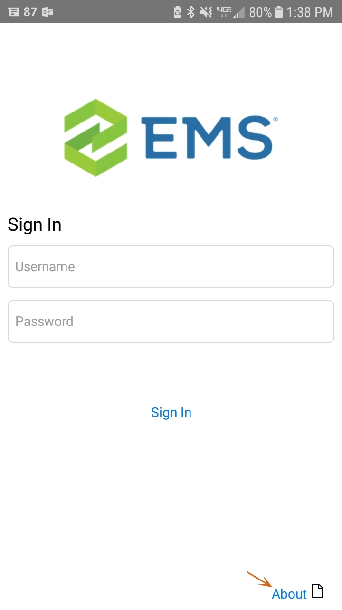
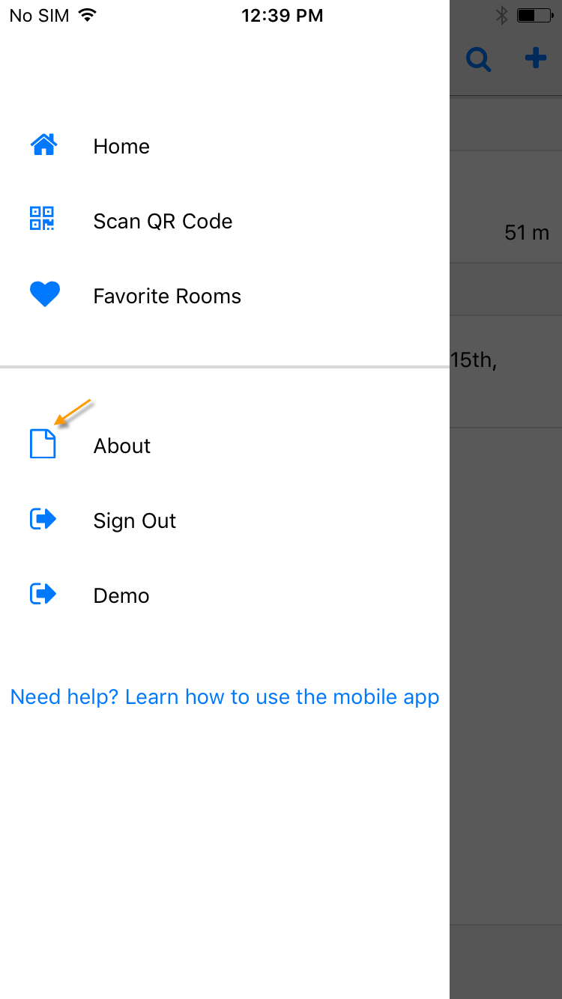
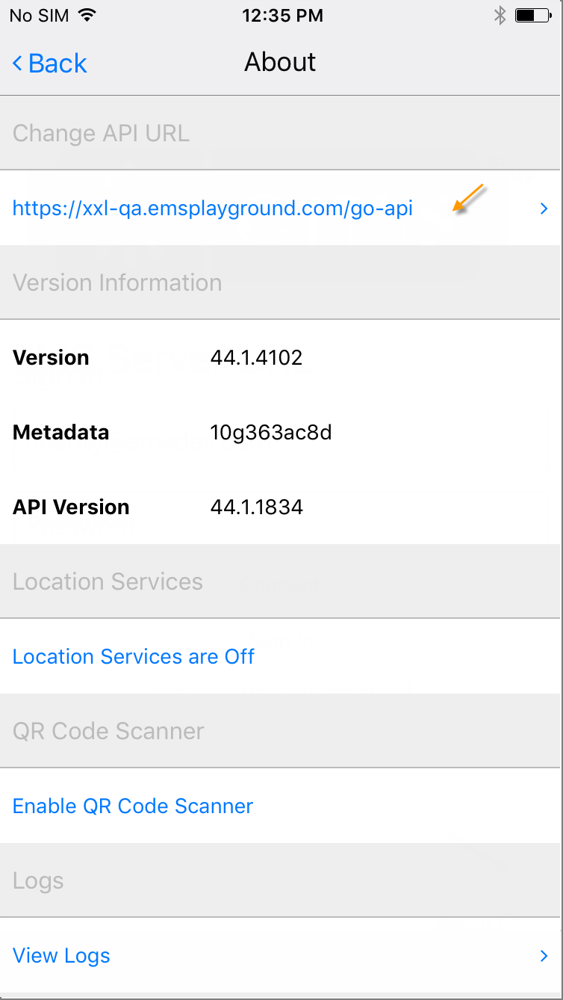
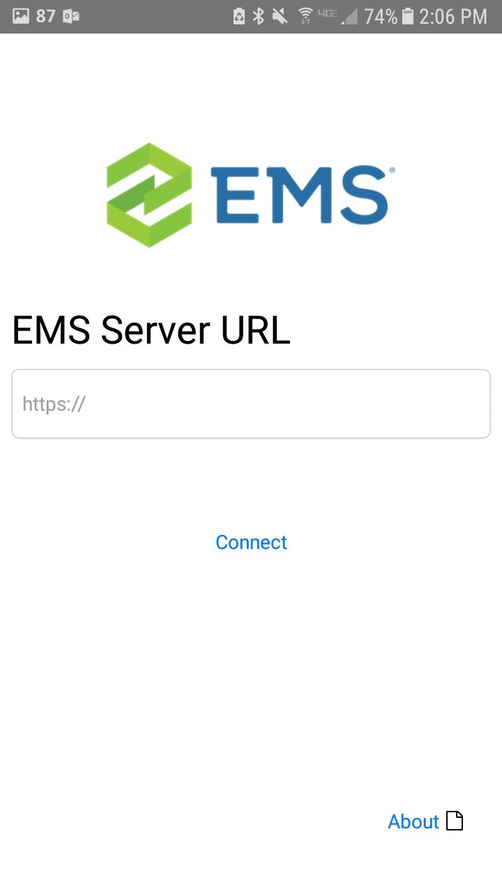

You can view and change the Server URL (also referred to as the API URL) to which your EMS Mobile App points.
To view or change the Server URL, do the following:
From the Sign in screen, tap About in the lower right-hand corner, or after signing in, tap on the menu and navigate to the About screen.

Tab About from Sign In Screen

Tap About from Main Menu
From the About screen, the API URL is listed under Change API URL. To change the API URL, tap the API URL address. The Server URL screen will appear.

Enter your server URL in the field and tap Connect. Check with your Administrator for the correct URL.
